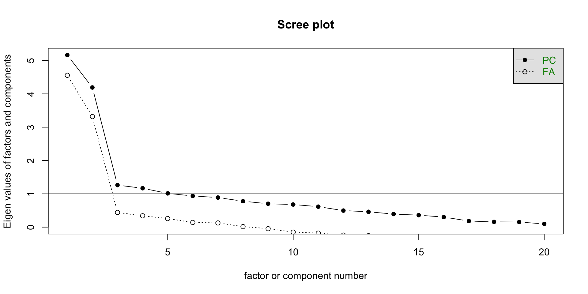
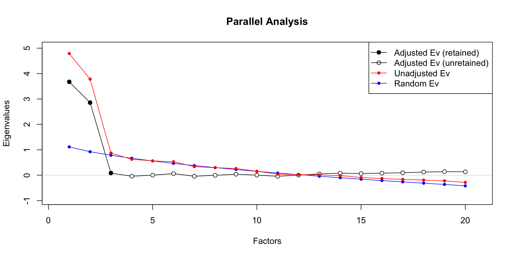

December 3, 2025
From paran package:
paran(dat, cfa = FALSE): conduct parallel analysisFrom psych package:
scree(dat): create a scree plotfa(dat, nfactors = ..., fm = ..., rotate = ...): fit an exploratory factor analysis (EFA) modelprint(fa()$loadings, cutoff = ...): print loadings from a fitted EFA model, suppressing loadings smaller than a given cut scoreFrom lavaan package:
cfa(dat, estimator = ...): fit a confirmatory factor analysis (CFA) modelstandardizedSolution(cfa()): print the standardized CFA resultsfitMeasures(cfa()): print fit measuresToday we’ll working data from a replication of the following study:
Cox, C. R., Arndt, J., Pyszczynski, T., Greenberg, J., Abdollahi, A., & Solomon, S. (2008). Terror management and adults’ attachment to their parents: the safe haven remains. Journal of Personality and Social Psychology, 94, 696-717.
As part of this study, the “Positive and Negative Affect Schedule” (PANAS) scale was administered. Responses were on a 5-point Likert scale.
The PANAS scale is supposed to have two subscales:
Through factor analysis, we can look investigate:
To make the FA results easier to visualize, it may be helpful to organize the columns by factors. Items 1, 3, 5, 9, 10, 12, 14, 16, 17, 19 belong to the positive mood scale, and items 2, 4, 6, 7, 8, 11, 13, 15, 18, and 20 belong to the negative mood scale.
So that we can explore and confirm our hypotheses in separate data sets, we will randomly split the data into do data sets. To do this, we will use the createFolds() function from the caret package.
First, let’s create the scree plot. Interpreting the scree plot is somewhat subjective, but some general rules are:
To create the scree plot in R (using the EFA dataset), run the following code. This will create the scree plot for both factors and components. They will usually lead to similar results.
Plot shown on the next slide. For both components and factors, I’d recommend retaining 3 factors/components.

Parallel analysis is more reliable and more objective than the scree plot. Here, the default in paran is to do parallel analysis on the full correlation matrix. If we want to instead conduct parallel analysis on the reduced correlation matrix, we can specify cfa = TRUE.
Results are shown on the next slide. Again, 3 factors are suggested. The option status=FALSE only prints less output, making it easier to show output on slides.
Using eigendecomposition of correlation matrix.
Results of Horn's Parallel Analysis for factor retention
600 iterations, using the mean estimate
--------------------------------------------------
Factor Adjusted Unadjusted Estimated
Eigenvalue Eigenvalue Bias
--------------------------------------------------
1 3.674405 4.788333 1.113927
2 2.860146 3.781275 0.921128
3 0.082750 0.871771 0.789021
--------------------------------------------------
Adjusted eigenvalues > 0 indicate dimensions to retain.
(3 factors retained)We can also demonstrate the parallel analysis procedure visually by setting graph = TRUE.
On this plot, we can either look at the red line (unadjusted eigenvalues) and keep all of the ones above the blue line (average of randomly generated eigenvalues), or compare the black like (adjusted eigenvalues) to the horizontal line at 0.
Once a red point drops below the blue line, or a black point drops below 0 (or 1 for components), we stop keeping factors.
Using eigendecomposition of correlation matrix.
To conduct an EFA, we use the fa() function in the psych package. Here, we should specify:
nfactors: the number of factors to extractrotate: the rotation method (if nfactors > 1) – here I choose “oblimin” because I want an oblique rotation to allow correlated factorsfm: the factor estimation method, “pa” gives principal axis, “ml” gives maximum likelihood (which assumes multivariate normality)—other options are described in the help page for fa()To display factor loadings, you can run…
…or you can specify a cutoff under which loadings are not printed
Results are shown on the next slide. All of the positive mood items loads cleanly on factor PA1. Most negative mood items load cleanly on factor PA2, but Panas2 and Panas3 load on factor PA3, and Panas6 does not have a large loading on any factor.
Loadings:
PA1 PA2 PA3
Panas1 0.522
Panas3 0.478
Panas5 0.563
Panas9 0.798
Panas10 0.649
Panas12 0.707
Panas14 0.594
Panas16 0.789
Panas17 0.714
Panas19 0.709
Panas2 0.986
Panas4 0.734
Panas6
Panas7 0.677
Panas8 0.552
Panas11 0.633
Panas13 0.415
Panas15 0.676
Panas18 0.421
Panas20 0.735
PA1 PA2 PA3
SS loadings 4.454 2.731 1.776
Proportion Var 0.223 0.137 0.089
Cumulative Var 0.223 0.359 0.448It’s okay to play around with different specifications for the EFA model, so long as you are clear that analyses are exploratory and that conclusions cannot be stated with confidence before confirmatory testing in a new data set.
To modify the previous result, we might want to look at the theoretically appropriate 2-factor structure as well. Here, the theoretical structure emerges very cleanly. Item Panas3 loads moderately on both factors, but this could be due to sampling error.
Output shown on next slide.
Loadings:
PA1 PA2
Panas1 0.505
Panas3 0.481 0.365
Panas5 0.574
Panas9 0.804
Panas10 0.656
Panas12 0.698
Panas14 0.598
Panas16 0.800
Panas17 0.696
Panas19 0.707
Panas2 0.694
Panas4 0.740
Panas6 0.329
Panas7 0.682
Panas8 0.407
Panas11 0.575
Panas13 0.468
Panas15 0.737
Panas18 0.473
Panas20 0.765
PA1 PA2
SS loadings 4.467 3.863
Proportion Var 0.223 0.193
Cumulative Var 0.223 0.416lavaan is a very flexible package for conducting structural equation modeling (SEM) analyses.
Within lavaan, we need to specify the structure of our model - specifically, which items load on which factors. This code must be within quotation marks.
We will first test the theoretical 2-factor structure. In lavaan syntax, latent variables are specified before the “=~” symbol (and can be given any name we choose), and observed variables are specified after the “=~” symbol and must be column names in the dataset.
Like the example from lecture, responses are on a 5-point Likert scale, which means we probably don’t have normally distributed data (although you should check in practice). Therefore, we want to use an estimation method that provides robust standard errors (“scaled” fit measures) such as “MLM”.
Because CFA is typically run on covariance matrices, we want to standardize the results to ease interpretation. This can be done with the standardizedSolution() function. The output is very long, but note the following:
lhs op rhs est.std se z pvalue ci.lower ci.upper
1 PosMood =~ Panas1 0.523 0.070 7.515 0.000 0.387 0.660
2 PosMood =~ Panas3 0.301 0.106 2.829 0.005 0.092 0.509
3 PosMood =~ Panas5 0.650 0.066 9.791 0.000 0.520 0.781
4 PosMood =~ Panas9 0.812 0.044 18.307 0.000 0.725 0.899
5 PosMood =~ Panas10 0.722 0.057 12.583 0.000 0.609 0.834
6 PosMood =~ Panas12 0.572 0.081 7.041 0.000 0.412 0.731
7 PosMood =~ Panas14 0.724 0.078 9.263 0.000 0.571 0.877
8 PosMood =~ Panas16 0.731 0.056 13.110 0.000 0.621 0.840
9 PosMood =~ Panas17 0.624 0.075 8.326 0.000 0.477 0.771
10 PosMood =~ Panas19 0.850 0.037 23.146 0.000 0.778 0.922
11 NegMood =~ Panas2 0.677 0.084 8.100 0.000 0.513 0.841
12 NegMood =~ Panas4 0.667 0.083 8.033 0.000 0.504 0.830
13 NegMood =~ Panas6 0.226 0.167 1.352 0.176 -0.102 0.554
14 NegMood =~ Panas7 0.834 0.043 19.585 0.000 0.750 0.917
15 NegMood =~ Panas8 0.477 0.144 3.321 0.001 0.196 0.759
16 NegMood =~ Panas11 0.528 0.097 5.418 0.000 0.337 0.719
17 NegMood =~ Panas13 0.516 0.127 4.053 0.000 0.266 0.765
18 NegMood =~ Panas15 0.851 0.050 16.871 0.000 0.752 0.950
19 NegMood =~ Panas18 0.426 0.124 3.436 0.001 0.183 0.669
20 NegMood =~ Panas20 0.874 0.039 22.493 0.000 0.798 0.950
21 Panas1 ~~ Panas1 0.726 0.073 9.967 0.000 0.583 0.869
22 Panas3 ~~ Panas3 0.910 0.064 14.234 0.000 0.784 1.035
23 Panas5 ~~ Panas5 0.577 0.086 6.679 0.000 0.408 0.746
24 Panas9 ~~ Panas9 0.340 0.072 4.725 0.000 0.199 0.482
25 Panas10 ~~ Panas10 0.479 0.083 5.782 0.000 0.317 0.641
26 Panas12 ~~ Panas12 0.673 0.093 7.258 0.000 0.492 0.855
27 Panas14 ~~ Panas14 0.476 0.113 4.210 0.000 0.254 0.698
28 Panas16 ~~ Panas16 0.466 0.081 5.726 0.000 0.307 0.626
29 Panas17 ~~ Panas17 0.611 0.093 6.537 0.000 0.428 0.794
30 Panas19 ~~ Panas19 0.277 0.062 4.445 0.000 0.155 0.400
31 Panas2 ~~ Panas2 0.542 0.113 4.787 0.000 0.320 0.763
32 Panas4 ~~ Panas4 0.555 0.111 5.015 0.000 0.338 0.772
33 Panas6 ~~ Panas6 0.949 0.076 12.528 0.000 0.800 1.097
34 Panas7 ~~ Panas7 0.305 0.071 4.300 0.000 0.166 0.444
35 Panas8 ~~ Panas8 0.772 0.137 5.623 0.000 0.503 1.041
36 Panas11 ~~ Panas11 0.721 0.103 7.010 0.000 0.520 0.923
37 Panas13 ~~ Panas13 0.734 0.131 5.592 0.000 0.477 0.991
38 Panas15 ~~ Panas15 0.276 0.086 3.215 0.001 0.108 0.444
39 Panas18 ~~ Panas18 0.819 0.106 7.751 0.000 0.612 1.026
40 Panas20 ~~ Panas20 0.236 0.068 3.478 0.001 0.103 0.369
41 PosMood ~~ PosMood 1.000 0.000 NA NA 1.000 1.000
42 NegMood ~~ NegMood 1.000 0.000 NA NA 1.000 1.000
43 PosMood ~~ NegMood -0.010 0.129 -0.080 0.936 -0.263 0.242The following will give you MANY fit measures, most of which we haven’t covered.
We can make fit evaluation simpler by only specifying certain fit measures to print:
fitMeasures(cfa_res,
fit.measures = c("chisq.scaled", "df.scaled",
"pvalue", "rmsea.scaled",
"srmr", "cfi.scaled", "tli.scaled"))chisq.scaled df.scaled pvalue rmsea.scaled srmr cfi.scaled
269.649 169.000 0.000 0.077 0.104 0.805
tli.scaled
0.781 Here, fit is a bit worse than we would usually want.
RMSEA is over .07, SRMR is over .08, and CFI/TLI are both under .95.
The problem stems in part from using 5-point Likert data, but we may also use a combination of theory and the EFA results to consider some modifications to the CFA model.